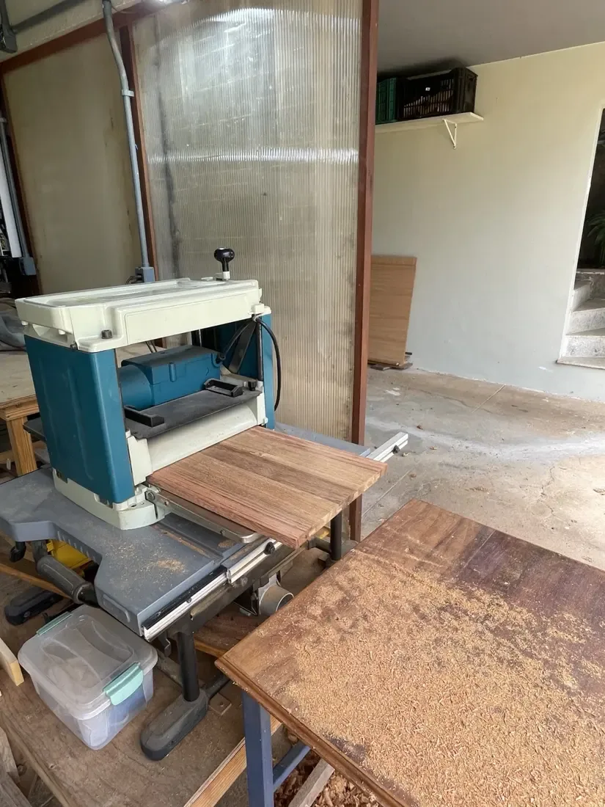
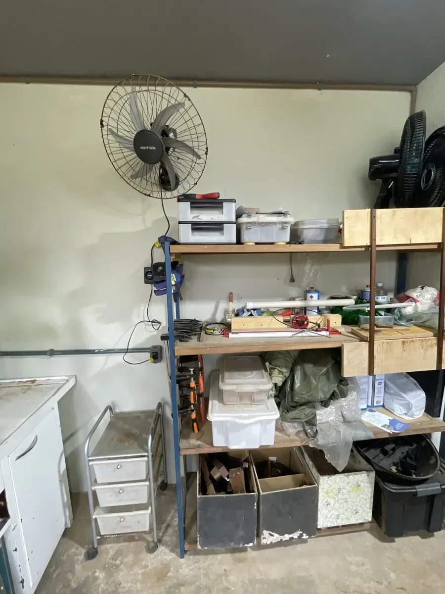

Como montar sua oficina de marcenaria: o exemplo de uma garagem de 17 m²
Planta, posição de cada máquina, bancada, energia, luz, água, pó e um checklist: o registro de cinco anos montando uma pequena oficina em Petrópolis, com o que faria diferente hoje.

Sua oficina pode ser grande ou pequena, numa garagem ou em outro ambiente. O importante é organizar o espaço de acordo com as máquinas, o tipo de trabalho e a circulação necessária. Como exemplo, mostro a minha garagem e as soluções que encontrei para aproveitar cada área, depois de cinco anos de experiência numa pequena oficina na Serra Fluminense.
Este guia não é uma receita pronta. É o registro do que construí, das adaptações que fiz e do que faria diferente hoje. Minha principal sugestão é começar pela bancada e pensar desde cedo na infraestrutura das máquinas que ainda podem chegar.
Onde coloquei cada máquina
A entrada fica na extremidade de 2,70 m, na parte de baixo do esquema. As máquinas ficam ao longo das paredes, e o centro fica livre para circular.
- Desempenadeira. Perto da entrada, do lado esquerdo. Mede cerca de 1,40 × 0,50 m e exige 35 cm livres para o deslocamento da barra da régua.
- Bancada. 1,64 × 0,66 m, com armários embaixo e morsa à esquerda. É o centro dos trabalhos manuais.
- Compressor. No chão, entre a bancada e o móvel da furadeira. Não instalei rede fixa de ar comprimido.
- Furadeira e armário. Bancada com furadeira vertical e armários embaixo, onde guardo o desengrosso.
- Armário do fundo. Aberto, de metal e madeira, com quatro prateleiras para materiais e acessórios.
- Ventilador. Na parede do fundo, à esquerda do armário. Movimenta o ar, mas não substitui a captação de pó.
- Mesa de saída. Com pés vazados, perto da entrada, para apoiar peças e facilitar a limpeza.
- Serra de bancada. Sobre um carrinho na mesma altura da bancada, para apoiar peças longas.
- Mesa auxiliar. Sobre rodízios, para colagem e outras tarefas, com prateleira embaixo para sobras de madeira.
- Serra de fita. A aquisição mais recente, do lado direito, perto do fundo.
Desenho esquemático: não representa as folgas de operação nem a escala exata.
Desengrosso: guardado no fundo, usado perto da entrada
O desengrosso é uma das máquinas que mais produzem cavacos e serragem. Como não o uso com tanta frequência, prefiro mantê-lo protegido, guardado no armário embaixo da furadeira vertical. Na hora de trabalhar, levo a máquina para perto da entrada da garagem, onde é mais fácil recolher e retirar os resíduos.
Costumo apoiá-lo sobre a serra de bancada, que já fica perto da porta. Atenção: uma lona comum não garante estabilidade. O apoio precisa ser firme, nivelado, aguentar o peso e a vibração da máquina e permitir fixá-la como manda o manual. A serra de bancada deve ficar desligada da tomada, sem possibilidade de ser acionada por acidente, enquanto servir de apoio.
Também aproveito duas mesas auxiliares que já tinha: uma para apoiar a madeira antes de entrar no desengrosso e outra, menor, na saída. Não é obrigatório ter as duas; no meu caso, elas facilitam o manuseio de peças compridas. Ajuste a altura dos apoios, mantenha o caminho livre e nunca substitua a condução segura prevista pelo fabricante.


É uma solução para uma garagem pequena, não uma recomendação universal. Se não der para garantir uma base estável sobre a serra de bancada, prefira um carrinho ou um suporte próprio para o desengrosso. Mesmo perto da porta, a coleta de pó na saída da máquina continua importante.
Máquinas altas no fundo: serra de fita e furadeira vertical
A furadeira vertical e a serra de fita ficaram mais para o fundo. Nos trabalhos que costumo fazer, as duas produzem relativamente pouca serragem, comparadas à serra de bancada, à desempenadeira e ao desengrosso.
Há também uma vantagem de organização: as duas são altas e ocupam muito volume visual. Encostadas nas paredes do fundo, deixam a área central livre para circular e movimentar tábuas.
A bancada foi a primeira decisão
Construí a bancada com 1,64 m de comprimento, 66 cm de profundidade e cerca de 85 cm de altura, com armários fechados embaixo e uma morsa metálica à esquerda. Fiz também o carrinho da serra de bancada para que a superfície ficasse na mesma altura da bancada, o que permite apoiar peças mais compridas.

A ordem em que a oficina cresceu
- Bancada: o primeiro móvel que construí e a referência de altura para os outros apoios.
- Serra de bancada: instalada num carrinho na mesma altura da bancada.
- Desengrosso: facilitou o preparo da madeira; fica guardado e vai para perto da entrada na hora do uso.
- Desempenadeira: completou o preparo da madeira bruta e pediu um espaço lateral próprio.
- Furadeira vertical: ganhou uma bancada com gavetas e armazenamento embaixo.
- Serra de fita: a mais recente, acomodada perto do fundo.
Energia, luz, água e pó
Elétrica
Distribuí tomadas pelas paredes, com eletrodutos aparentes, que facilitam mudanças futuras. A iluminação tem circuito separado. Algumas máquinas podem pedir alimentação trifásica, mas isso depende do equipamento e da rede disponível; não é obrigatório para começar. Um eletricista habilitado deve dimensionar tensão, circuitos, proteções e aterramento.
Iluminação
Uso luz geral difusa e comprida no teto, complementada por luz pontual onde faz falta: bancada, furadeira, serra de fita, mesa auxiliar e serra de bancada. Na bancada, a luz de cima deve iluminar a área de trabalho sem ficar bloqueada pelo corpo.
Água e esgoto
Uma área úmida ajuda na afiação de formões e plainas e na limpeza de pincéis. Na minha oficina ela fica na outra vaga da garagem; em outro projeto, poderia ficar numa região afastada das máquinas e das tomadas. Resíduos de tintas, vernizes e solventes precisam de descarte adequado, nunca direto no esgoto.
Pó e ventilação
Coloquei a desempenadeira e a serra de bancada perto da entrada e um ventilador no fundo. Para reduzir a exposição ao pó fino, priorize a captação junto às máquinas, a filtragem e a proteção respiratória; um ventilador sozinho não resolve.
Armazenamento
Além dos armários sob a bancada, vale prever um armário grande, com portas, para proteger as ferramentas elétricas portáteis da poeira; o espaço embaixo da bancada da furadeira é uma boa opção. Armários altos nas paredes ao lado da furadeira também funcionam (acima dela não há altura). Se escolher armários suspensos, deixe um ponto de energia para a luz embaixo deles. Para as ferramentas de uso frequente, um painel na parede continua útil, e a madeira pode ficar em suportes de parede, desde que a estrutura aguente o peso.
Pintura e acabamento
Não defini um ponto fixo para pintura. Cada oficina precisa considerar o tipo de produto, a ventilação, a proteção contra poeira e a distância das fontes de ignição. Produtos inflamáveis ou pintura por pulverização exigem cuidados específicos.
Um passeio pelo espaço



Checklist para planejar a sua oficina
Espaço
- Medir o local e desenhar a planta.
- Reservar passagem e área de operação de cada máquina.
- Planejar onde ficam a madeira e as ferramentas.
- Prever um armário fechado para as ferramentas elétricas portáteis.
Infraestrutura
- Avaliar a parte elétrica com um profissional.
- Planejar luz geral e luz pontual.
- Prever água e esgoto.
- Deixar energia para a luz sob armários aéreos.
Trabalho seguro
- Definir a altura da bancada.
- Planejar o controle do pó.
- Avaliar onde fazer o acabamento.